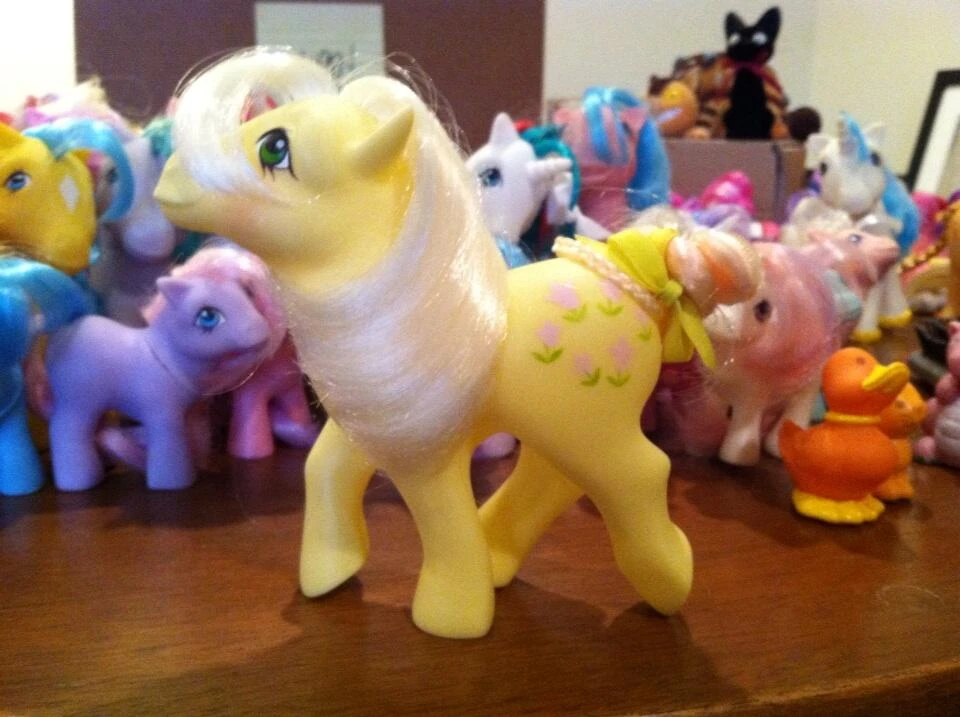
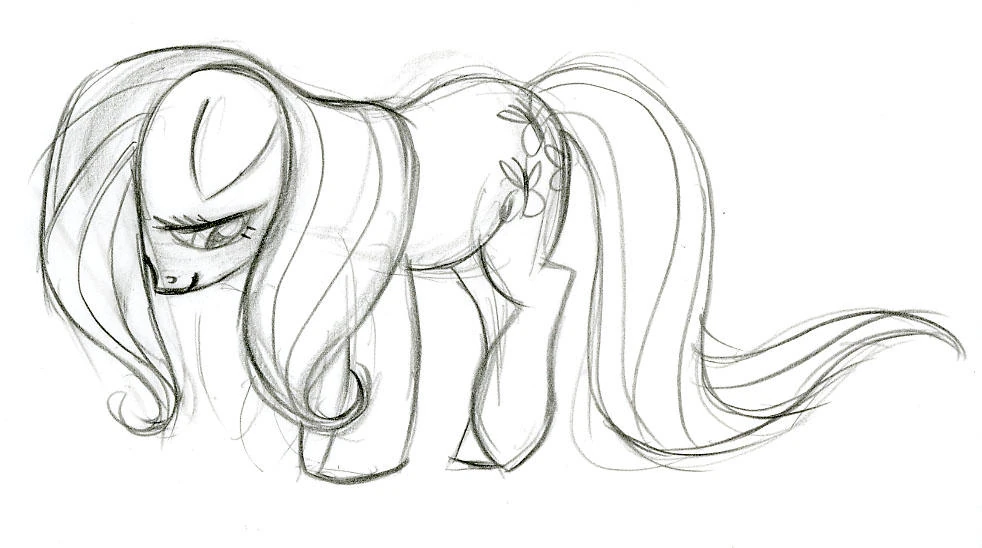
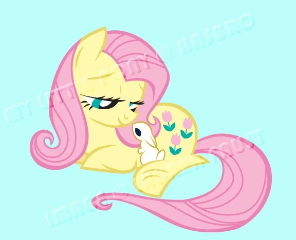

Fluttershy

✧ Es una pegaso muy tímida y amable que vive en Ponyville. Le encantan los animales y tiene un talento especial para comunicarse con ellos.
Su cutie mark son tres mariposas rosas que representan su amor y cuidado por los animales.
El elemento de la armonía que ella representa es el de la bondad.
Su voz original es hecha por Andrea Libman (al igual que la de Pinkie) y en español latino es doblada por Maggie Vera
❁ ◡ ❁ ◡ ❁ ◡ ❁ ◡ ❁ ◡ ❁ ◡ ❁ ◡ ❁ ◡ ❁ ◡ ❁ ◡ ❁ ◡ ❁ ◡ ❁ ◡ ❁ ◡ ❁ ◡ ❁ ◡ ❁ ◡ ❁ ◡ ❁
Diseño
Para Fluttershy, Lauren Faust se basó en el personaje de la G1 Posey. Al inicio, Fluttershy iba a ser un pony terrestre:
|  |  |
 |
 |
hola